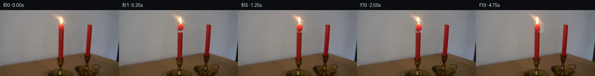

![首帧]()

Round 00
2026-11-05T20:40:56.533319+00:00像素候选变化代码 +360/−0inspection 更新
pixels a18a2569ed0a90ae · code ae26e8d43b9d0593
查看本轮 generate.py 真实 diff
--- previous/generate.py
+++ current/generate.py
@@ -0,0 +1,360 @@
+#!/usr/bin/env python3
+"""PixelWorld-Text: Two red candles, left candle burning – 20-frame generation.
+Generates flame flicker, subtle wax melt, and ambient glow modulation.
+All pixel operations performed locally with NumPy/PIL."""
+
+import numpy as np
+from PIL import Image
+import sys
+import os
+
+# Ensure we run from workspace
+os.chdir(os.path.dirname(os.path.abspath(__file__)) or '.')
+
+# ─── Load first frame ────────────────────────────────────────────────────────
+base = np.array(Image.open('first_frame.png')).astype(np.float64)
+H, W = 144, 256
+assert base.shape == (H, W, 3), f'Expected (144,256,3), got {base.shape}'
+
+# ─── Region definitions ─────────────────────────────────────────────────────
+# Flame ROI (includes margin for animation)
+FLAME_Y0, FLAME_Y1 = 26, 49 # y range for flame operations
+FLAME_X0, FLAME_X1 = 118, 146 # x range for flame operations
+
+# Candle body (left, burning) – for wax melt
+CANDLE_Y0, CANDLE_Y1 = 46, 106
+CANDLE_X0, CANDLE_X1 = 125, 139
+
+# Ambient glow region on wall (left of flame)
+GLOW_Y0, GLOW_Y1 = 25, 50
+GLOW_X0, GLOW_X1 = 103, 127
+
+# Wall gradient behind flame (for background fill)
+# We precompute a clean background for the flame ROI using wall interpolation.
+
+def make_clean_bg(frame, fy0, fy1, fx0, fx1):
+ """Fill flame ROI with estimated wall background via horizontal interpolation."""
+ bg = frame.copy()
+ for y in range(fy0, fy1):
+ # Sample wall to left (avoiding flame and candle edges)
+ left_xs = slice(max(0, fx0 - 8), fx0 - 2)
+ right_xs = slice(fx1 + 2, min(W, fx1 + 10))
+ left = frame[y, left_xs].mean(axis=0)
+ right = frame[y, right_xs].mean(axis=0)
+ for x in range(fx0, fx1):
+ t = (x - fx0) / max(1, fx1 - fx0 - 1)
+ bg[y, x] = left * (1 - t) + right * t
+ return bg
+
+# ─── Flame mask ──────────────────────────────────────────────────────────────
+def flame_mask(frame, y0, y1, x0, x1):
+ """Return boolean mask of flame pixels (bright orange/yellow)."""
+ roi = frame[y0:y1, x0:x1]
+ r, g, b = roi[..., 0], roi[..., 1], roi[..., 2]
+ # Flame is bright with R >> B and R >> G, G is moderate-high
+ bright = (r > 180) & (r > g + 30) & (r > b + 30) & (g > 30)
+ # Also catch edge glow
+ edge = (r > 150) & (r > g + 20) & (r > b + 20) & (g > 30)
+ return bright | edge
+
+# ─── Precompute clean background ─────────────────────────────────────────────
+clean_bg = make_clean_bg(base, FLAME_Y0, FLAME_Y1, FLAME_X0, FLAME_X1)
+
+# ─── Animation parameters per frame ──────────────────────────────────────────
+# Multi-frequency oscillation for natural flicker
+def flicker_params(t, frame_idx):
+ """Return (brightness_scale, vert_stretch_px, horiz_stretch_px, sway_px)."""
+ # t in seconds, frame_idx 0-19
+ # Two main frequency components
+ w1 = 2.0 * np.pi * 2.3 # ~2.3 Hz
+ w2 = 2.0 * np.pi * 7.5 # ~7.5 Hz (faster flicker)
+ w3 = 2.0 * np.pi * 0.7 # ~0.7 Hz (slow breathing)
+
+ # Brightness: combine slow + fast components
+ b = 1.0 + 0.08 * np.sin(w1 * t + 1.2) + 0.05 * np.sin(w2 * t + 3.7) + 0.03 * np.sin(w3 * t + 0.5)
+ b = np.clip(b, 0.85, 1.15)
+
+ # Vertical stretch (negative = compress, positive = stretch up)
+ v = np.round(1.5 * np.sin(w1 * t + 0.8) + 1.0 * np.sin(w2 * t + 2.1)).astype(int)
+ v = int(np.clip(v, -2, 2))
+
+ # Horizontal stretch
+ h = np.round(1.5 * np.sin(w1 * t + 2.5) + 1.0 * np.sin(w2 * t + 4.0)).astype(int)
+ h = int(np.clip(h, -2, 2))
+
+ # Sway (x-shift)
+ s = np.round(0.7 * np.sin(w1 * t + 3.9) + 0.5 * np.sin(w2 * t + 1.5)).astype(int)
+ s = int(np.clip(s, -1, 1))
… diff truncated; 273 more lines …